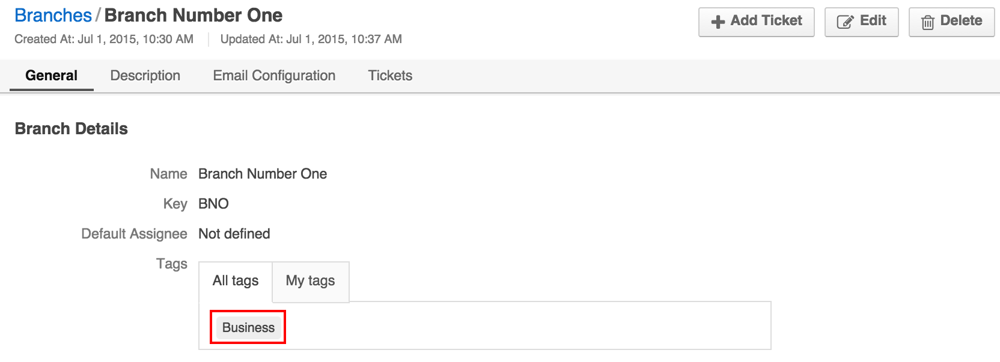
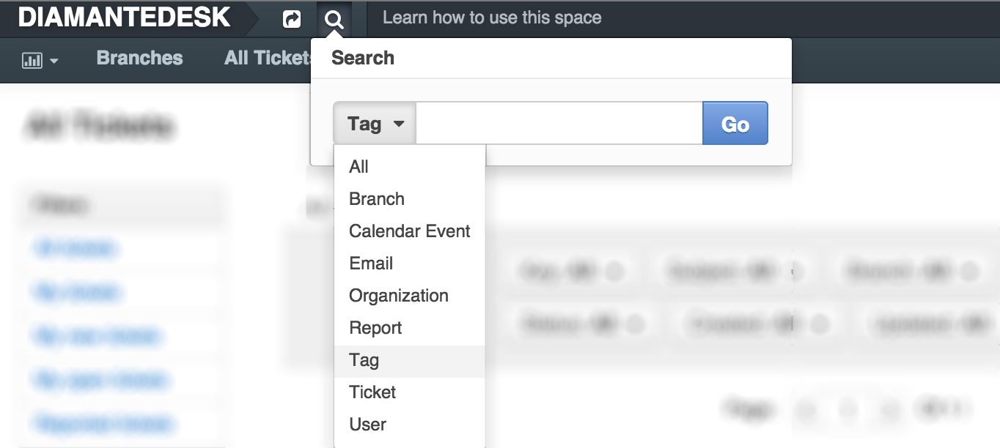

DiamanteDesk administrators can tag Branches or Tickets in order to label them in a certain way. The process of ticket tagging is identical to branch tagging. The main purpose of tags in DiamanteDesk is to give administrators the ability to easily view similar branches. When two or more branches are given the same tag, administrators can view all branches grouped together. When administrator clicks a certain tag, he can also view every single branch with the same tag.
Note: Tags are only visible for system administrators, regular users can not see them.
Tags can be added either when a new branch is created or whenever such need arises:

Note: Each branch can be labeled with the unlimited amount of tags.
To perform the search by tags, two options are available in the system:

Select the required category on the left side of the screen (in our case it is Branches).

Now the search displays all the branches tagged as Business.